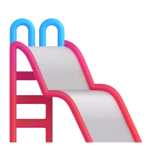
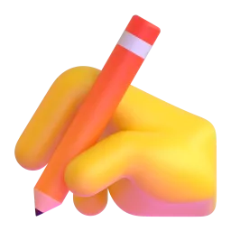

V1 — начальная форма · V2 — Past Simple (went) · V3 — третья форма (have gone, is made). Нажмите 🔊, чтобы послушать.
Глаголов: 96
V1
V2 · Past
V3
Перевод
Слушать
beбыть
was / were
been
быть
becomeстановиться
became
become
становиться
beginначинать
began
begun
начинать
betдержать пари
bet
bet
держать пари
biteкусать
bit
bitten
кусать
blowдуть
blew
blown
дуть
breakломать
broke
broken
ломать
bringприносить
brought
brought
приносить
buildстроить
built
built
строить
burnгореть, жечь
burnt / burned
burnt / burned
гореть, жечь
buyпокупать
bought
bought
покупать
catchловить
caught
caught
ловить
chooseвыбирать
chose
chosen
выбирать
comeприходить
came
come
приходить
costстоить
cost
cost
стоить
cutрезать
cut
cut
резать
dealиметь дело
dealt
dealt
иметь дело
digкопать
dug
dug
копать
doделать
did
done
делать
drawрисовать
drew
drawn
рисовать
dreamмечтать, видеть сны
dreamt / dreamed
dreamt / dreamed
мечтать, видеть сны
drinkпить
drank
drunk
пить
driveводить машину
drove
driven
водить машину
eatесть
ate
eaten
есть
fallпадать
fell
fallen
падать
feedкормить
fed
fed
кормить
feelчувствовать
felt
felt
чувствовать
fightбороться, драться
fought
fought
бороться, драться
findнаходить
found
found
находить
flyлетать
flew
flown
летать
forgetзабывать
forgot
forgotten
забывать
forgiveпрощать
forgave
forgiven
прощать
freezeзамерзать
froze
frozen
замерзать
getполучать; становиться
got
got
получать; становиться
giveдавать
gave
given
давать
goидти, ехать
went
gone
идти, ехать
growрасти, выращивать
grew
grown
расти, выращивать
hangвешать
hung
hung
вешать
haveиметь
had
had
иметь
hearслышать
heard
heard
слышать
hideпрятать
hid
hidden
прятать
hitударять
hit
hit
ударять
holdдержать
held
held
держать
hurtпричинять боль
hurt
hurt
причинять боль
keepхранить, продолжать
kept
kept
хранить, продолжать
knowзнать
knew
known
знать
leadвести
led
led
вести
learnучить
learnt / learned
learnt / learned
учить
leaveуходить, оставлять
left
left
уходить, оставлять
lendодалживать
lent
lent
одалживать
letпозволять
let
let
позволять
lieлежать
lay
lain
лежать
lightзажигать
lit
lit
зажигать
loseтерять
lost
lost
терять
makeделать, создавать
made
made
делать, создавать
meanзначить
meant
meant
значить
meetвстречать
met
met
встречать
payплатить
paid
paid
платить
putкласть
put
put
класть
quitбросать (привычку, работу)
quit
quit
бросать (привычку, работу)
readчитать
read
read
читать
rideездить (верхом, на велосипеде)
rode
ridden
ездить (верхом, на велосипеде)
ringзвонить
rang
rung
звонить
riseподниматься
rose
risen
подниматься
runбежать
ran
run
бежать
sayсказать
said
said
сказать
seeвидеть
saw
seen
видеть
sellпродавать
sold
sold
продавать
sendотправлять
sent
sent
отправлять
setустанавливать
set
set
устанавливать
shakeтрясти
shook
shaken
трясти
shineсветить
shone
shone
светить
shootстрелять; снимать
shot
shot
стрелять; снимать
showпоказывать
showed
shown
показывать
shutзакрывать
shut
shut
закрывать
singпеть
sang
sung
петь
sinkтонуть
sank
sunk
тонуть
sitсидеть
sat
sat
сидеть
sleepспать
slept
slept
спать
smellпахнуть, нюхать
smelt / smelled
smelt / smelled
пахнуть, нюхать
speakговорить
spoke
spoken
говорить
spendтратить; проводить (время)
spent
spent
тратить; проводить (время)
standстоять
stood
stood
стоять
stealкрасть
stole
stolen
красть
swimплавать
swam
swum
плавать
takeбрать
took
taken
брать
teachучить, преподавать
taught
taught
учить, преподавать
tearрвать
tore
torn
рвать
tellрассказывать, говорить
told
told
рассказывать, говорить
thinkдумать
thought
thought
думать
throwбросать
threw
thrown
бросать
understandпонимать
understood
understood
понимать
wakeпросыпаться, будить
woke
woken
просыпаться, будить
wearносить (одежду)
wore
worn
носить (одежду)
winвыигрывать
won
won
выигрывать
writeписать
wrote
written
писать
IRIS /Моё пространствоСохранение в браузере
М
IRIS SCHOOL · Ксения
What Makes a Good Life?
A real news interview with the director of the longest study of happiness ever conducted. Then we take the grammar from it and make it clear, step by step.
Intermediate+Authentic videoPresent Perfect vs Past Simple20 min homework + 60 min lesson
Before the lesson: homework
20 min at home
Do this at home before our lesson. Your answers help your teacher plan the lesson for you, so don't look anything up: it's fine to make mistakes! At the end, press «Отправить преподавателю».
1. Learn the new words
Tap a card to see the meaning. Save the words you want to remember to your dictionary.
2. Match the word and the meaning
to bicker →
loneliness →
to count on someone →
to stay sharp →
a study →
high-conflict →
social connections →
to track someone's life →
3. What do you already know?
Choose the correct form. Don't worry if you're not sure: this shows your teacher what to explain in the lesson.
I in this city since 2015.
We at university ten years ago.
to a concert alone?
My parents married for 30 years. They are very happy.
I my cousin since the summer.
Last year my best friend to another country.
Look! I my homework.
When learning English?
4. About you
Answer in full sentences (2–3 sentences each).
Who is the person you have known the longest? How long have you known them?
Where and when did you meet this person?
What makes your life good right now?
5. Your question
Is there anything about Present Perfect and Past Simple that confuses you? Write it in Russian or English.
Готово? Отправьте ответы преподавателю
Ответы сразу придут преподавателю на платформу — пересылать в Telegram ничего не нужно. Нет интернета? Ответы сохранятся и отправятся сами. Открыть их может только преподаватель.
Warm-up: What makes people happy?
5 min
A survey asked young adults about their most important life goals. Over 80% said one of their main goals was to get rich. About 50% said another big goal was to become famous.
Rank these from 1 (most important for a happy life) to 7. Explain your choice and ask your teacher: "What about you?"
moneyfamehealtha good careerfamilyfriendsfreedom
For me, … is the most important because…I'd put … at the bottom because…It depends on…
Words from your homework
5 min
Do you remember the words from your homework? Complete the sentences.
My grandmother is 90, but her memory is still .
Scientists have these people's lives for decades.
When I have a problem, I can always my sister.
My parents about who forgot to buy bread, but they are very happy together.
After he moved to a new city, he suffered from .
Use them
Tell your teacher about a real person in your life. Use at least two new words.
I can always count on…We sometimes bicker about…Her memory is still sharp…We stay in touch because…
Video: the happiness study in 6 minutes
14 min
"Researchers find strong relationships protect long-term health and happiness"PBS NewsHour · interview with Robert Waldinger, director of the Harvard study · about 6 minutes
What do you think matters most for a long and healthy life: money, fame, exercise or relationships? Make a guess.
First viewing: the main idea
Watch without subtitles. Only answer this question.
What is the main finding of the study?
Second viewing: details
Watch again. You can turn on English subtitles.
1. Who is Robert Waldinger?
2. When did the study begin?
3. According to the study, what matters more for long-term happiness than money or fame?
4. Write down one piece of advice Waldinger gives about relationships.
After watching: retell it in one minute
Imagine your teacher hasn't seen the video. Explain the study and its main message.
The study has followed…They have found that…The main message is…What surprised me was…
Present Perfect or Past Simple?
10 min
Step 1. Notice. Look at two sentences about the study.
A. The researchers have followed these people since 1938. B. The study started in 1938.
1. Sentence A: is the study still going on now?
2. Sentence B: do we know exactly when it happened?
3. "I've known Anna for ten years." Do I still know Anna?
4. "I lived in Kazan for five years." Do I live in Kazan now?
Step 2. Check the rule.
Past Simple: finished time
in 1938NOW
V2 / V-ed · did you…?
When? We know or ask about the time: The study started in 1938.
Stories and details: We met at university.
yesterday, last year, in 2015, ago, when I was a child
Present Perfect: past + now
1938NOW
have / has + V3
From the past until now: The study has followed them since 1938.
Life experience, no exact time: I've been to Italy.
Result now: I've lost my keys!
ever, never, already, yet, just, for, since
Подсказка. В русском одно прошедшее время, поэтому спросите себя: важно, КОГДА это было (есть «вчера», «в 2015», «неделю назад»)? Тогда Past Simple. Важен опыт или результат к сегодняшнему дню, а точного времени нет? Тогда Present Perfect. Со словом ago Present Perfect не бывает.
Step 3. How real conversations work.
A: Have you ever been to Georgia? (experience: Present Perfect) B: Yes, I have! (short answer) A: Really? When did you go? (details: Past Simple) B: I went there two years ago. The food was amazing!
Step 4. Sort the time words.
yesterday →
ever →
two days ago →
already →
in 2019 →
since Monday →
when I was a child →
yet →
Practice
7 min
Choose the correct form. Then say each sentence out loud.
The researchers these men since 1938.
The study in 1938.
I my best friend for twenty years.
We in Sochi last summer.
alone?
She her job two months ago.
Oh no! I my phone. I can't find it anywhere!
When your best friend?
Let's talk
14 min
1. "Have you ever…?" chain
Ask a Have you ever…? question. If the answer is "yes", ask two follow-up questions in Past Simple: When…? Where…? Who with? What was it like? Then your teacher asks you.
Press the button to start
Have you ever lost touch with a good friend?
Have you ever made a friend online?
Have you ever lived in another city?
Have you ever helped a stranger?
Have you ever had a big argument with a friend and made up?
Have you ever done something really brave?
Have you ever met someone famous?
Have you ever changed your mind about something important?
2. Role-play: The happiness interview
Your card. You are a researcher from the Harvard study. Interview the participant (your teacher). Start with Present Perfect, then ask for details in Past Simple.
How long have you lived in…?
Have you ever…? → When did you…? What happened?
Who has influenced you the most? How did you meet?
What's the best thing that has happened to you this year?
Then swap: your teacher interviews you.
3. Fluency: A person who has made my life better
Tell the same story three times. Each time you have less time: speak faster and add details. Use your homework answers to help you.
Extra, if you have time: Agree or disagree?
Press the button!
Money can buy happiness.
It's better to have a few close friends than many friends.
Social media has made people lonelier.
Arguing is healthy in a relationship.
Happy people live longer.
I totally agree, because…I'm not sure about that…It depends on…I see your point, but…
Feedback
3 min
Your teacher writes here: your best phrases and the mistakes to work on.
Great phrases you used
Let's fix
Today I can…
understand the main idea of a short interview
choose between Present Perfect and Past Simple
ask "Have you ever…?" and follow-up questions
Homework after the lesson
2 min
Practise: do the exercise below.
Write 100–120 words in the box at the bottom: "A person who has made my life better". Use Present Perfect for the connection to now (I've known her for… / She has always…) and Past Simple for the story (We met in… / She helped me when…).
Watch Waldinger's TED Talk "What makes a good life?" (13 min) with English subtitles. Write down 5 phrases you like.
Send your answers to your teacher with the button below.
I (never / try) sushi.
My grandparents (get) married in 1975.
(you / finish) the report yet?
He (live) here since 2020.
Last weekend we (go) to a concert.
I (just / see) your message.
How long (you / know) Anna?
She (call) me an hour ago.
Готово? Отправьте ответы преподавателю
Ответы сразу придут преподавателю на платформу — пересылать в Telegram ничего не нужно. Нет интернета? Ответы сохранятся и отправятся сами. Открыть их может только преподаватель.
extra practice
10 min
What to do
Build the sentences: tap the words in the right order. Made a mistake? Press «↺ Заново».
Find the mistake in each sentence and write the correct sentence.
Press «Проверить» after each exercise.
1. Build the sentence
2. Find the mistake
I have seen him yesterday.
We know each other since 2010.
Have you ever try sushi?
She has left two hours ago.
Homework: words and grammar
20 min at home
Homework. Everything is checked here — press «Проверить» after each exercise. Your answers are saved automatically; at the end press «Отправить преподавателю».Домашнее задание: слова и грамматика урока. Всё проверяется на платформе, ответы сохраняются сами. В конце нажмите «Отправить преподавателю».
a Words: what is it? Tap the right word.Слова: выберите слово по значению.
«to follow and record what happens to someone over time» →
«a piece of scientific research» →
«the sad feeling of being alone» →
«relationships with family, friends and community» →
«full of arguments and fights» →
«to argue about small, unimportant things» →
b Words: write it in English.Слова: напишите по-английски.
отслеживать чью-то жизнь →
исследование →
одиночество →
социальные связи →
c Grammar: tap the correct form.Грамматика: выберите правильную форму.
I my best friend in 2010.
We friends for fifteen years now.
you ever been in love?
She married last summer.
I him since we were at school.
Have you seen Anna recently? — Yes, I her yesterday.
d Grammar: find the mistake and write the correct sentence.Найдите ошибку и напишите правильно.
I have seen him last week.
How long do you know her?
Have you ever feel really happy?
e About you: finish the sentences.О себе: закончите предложения.
Готово? Отправьте ответы преподавателю
Ответы сразу придут преподавателю на платформу — пересылать в Telegram ничего не нужно. Нет интернета? Ответы сохранятся и отправятся сами. Открыть их может только преподаватель.
Play and review
10 min
Game time!Слова урока в играх: пары, скорость, буквы и даже детектив. Выбирайте любую.
What to do · Что делать
Play with the words from this lesson — great for review before the next lesson!Играйте со словами урока — это лучший способ повторить их.
Your best results are saved and your teacher can see them.Лучшие результаты сохраняются, преподаватель их видит.
Match upНайди пару
Tap a word, then its meaning. As fast as you can! · Нажмите слово, потом его значение.
60 seconds60 секунд
Choose the right word for the meaning. How many in one minute? · Сколько слов успеете за минуту?
Listen and spellУслышь и напиши
Listen to the word and write it. Press 🔊 to hear it again. · Послушайте слово и напишите его.
MemoryМемори
Find the pairs: a word and its meaning. Remember where the cards are! · Откройте по две карточки и найдите пары «слово — значение».
Word builderСобери слово
The letters are mixed up. Tap them in the right order. · Буквы перепутались — нажимайте их по порядку и соберите слово.
BalloonsВоздушные шарики
Guess the word letter by letter. Every wrong letter pops a balloon! · Угадайте слово по буквам. Каждая неверная буква лопает шарик.
DetectiveДетектив
Solve the case! Each clue is a task with this lesson's words and grammar. Every right answer clears one suspect. · Раскройте дело: каждая улика — задание по словам и грамматике урока.
IRIS SCHOOL · Ксения · урок 2
A Week in My Life
Emma's usual week, this busy week and her big plans for Saturday. Practise the present simple and continuous, then the future: I'm meeting · I'm going to · I'll.
“The future depends on what you do today.”Mahatma Gandhi
IntermediateMy weekPresent simple & continuousFuture forms60 min
my week
10 min
In this lesson you will…
learn 10 phrases about your week and your free time
read Emma's blog and practise present simple vs present continuous
listen to Emma's weekend plans and practise future forms: I'm meeting · I'm going to · I'll
use everything together to write about your week and your plans
a Meet Emma. These pictures are from her week. Which of these things do you do every week? Tell your teacher in one sentence.
a lie-ina runshoppingfriendswork from homelate!a day offtickets
b Go to the Vocabulary Bank. Tap each card, press 🔊 and repeat. Then do the exercises.
Vocabulary Bank2AMy week
I don't work on Mondays — it's my .
Sorry, the bus is slow — I'm running !
I'd like to take a new hobby — maybe dancing.
Let's a table at the restaurant for eight o'clock.
I'm really looking forward the holidays.
We haven't met for a month — let's catch on Friday!
c do, go, have, catch… Which verb goes with each phrase?Какой глагол подходит?
the shopping
a lie-in
for a run
up with friends
from home
up yoga
Emma's blog
10 min
a Now read Emma's blog. Find five phrases from the Vocabulary Bank. Tap any word you don't know.
Emma's blog · «A week in my life»
Hi, I'm Emma. I'm 27 and I work at a small travel agency in Brighton. My week is usually very simple. I get up at seven, go for a run by the sea and take the bus to work. I finish at five, and I usually do the shopping on the way home. On Fridays I catch up with friends, and on Saturdays I always have a lie-in — I never get up before ten!
But this week is different. My boss is on holiday, so I'm working from home and I'm doing her job too! I'm not going for a run in the mornings because I'm always running late. And this month I'm learning to cook Thai food — I'm taking an online course. It's hard, but I love it.
Next Saturday is my day off… and I've got big plans. More about that tomorrow!
b True or false?
Emma works at a travel agency. →
She usually takes the bus to work. →
On Fridays she does the shopping. →
This week she is working in the office. →
She is taking an online cooking course. →
Her day off is next Sunday. →
c Look at the blog again. Is each sentence about Emma's usual week or about this week / now? This is the grammar of the next stage.Обычная неделя или «сейчас / на этой неделе»?
I get up at seven. →
I'm working from home. →
I usually do the shopping on the way home. →
I'm not going for a run in the mornings. →
I never get up before ten. →
I'm learning to cook Thai food. →
present simple vs continuous
15 min
a Read the Grammar Bank. All the examples are from Emma's blog.
Grammar Bank2Apresent simple vs present continuous
present simple
present continuous
use
habits, routines, facts — usually
now, this week, temporary situations
+
She gets up at seven.
She's working from home this week.
–
She doesn't work on Saturdays.
She's not going for a run this week.
?
Does she work on Fridays?
What is she doing at the moment?
time words
usually, always, often, never, every day, on Fridays
now, at the moment, today, this week, this month, these days
He / she / it: -s in the present simple: she gets, he catches, she does.
State verbs are usually not used with -ing: like, love, want, need, know, understand. ✗ I'm wanting a new phone. ✓ I want a new phone.
Подсказка. «Обычно, всегда, по пятницам» → present simple. «Сейчас, на этой неделе, в этом месяце» → present continuous.
Emma usually at seven.
This week she from home.
She the shopping on the way home every day.
At the moment she an online course.
On Saturdays she always a lie-in.
She Thai food — it's delicious!
b Time words. Which tense do they go with?С каким временем эти слова?
usually →
at the moment →
every Friday →
this week →
never →
now →
these days →
on Sundays →
c Write the verb in the present simple or the present continuous.Напишите глагол в нужной форме.
Jack (work) in a bank.
Look! It (rain).
I (not / drink) coffee in the evening.
Why (you / laugh)?
My sister (stay) with us this week.
How often (you / go) for a run?
We (not / watch) TV at the moment.
Emma (catch) up with friends every Friday.
d State verbs: no -ing!Глаголы состояния — без -ing.
I what you mean.
She a new phone.
We more time, sorry.
this song?
e Build the questions — then ask your teacher one of them.
Emma's weekend plans
10 min
a Remember? Emma's day off is next Saturday, and she has «big plans». Listen to her phone call with Jack. What is she doing on Saturday?
Phone call: Emma and JackListen first · Use 🐢 if it's fast · Text at the end
Jack:Hi Emma! Are you free on Saturday? I'm having a barbecue in the garden.
Emma:Oh, sorry, Jack, I can't come on Saturday. I'm meeting my sister at nine. We're going to Oxford for the day.
Jack:Oxford! How are you getting there?
Emma:We're taking the ten o'clock train. I booked the tickets yesterday.
Jack:Nice. What are you going to do there?
Emma:We're going to walk by the river and have lunch in a little café. And I'm going to take lots of photos.
Jack:Hmm, look at the sky today. I think it's going to rain this weekend.
Emma:Oh no! Then I'll take my umbrella. What about Sunday? Are you doing anything?
Jack:Nothing special. I'm going to stay at home and relax.
Emma:Then I'll come to your place on Sunday! I'll bring a cake.
Jack:Perfect! I'll make some coffee. I'm really looking forward to it.
On Saturday Emma is…
b Listen again. Complete the details.
Emma is meeting her sister at .
They're taking the o'clock train.
They're going to walk by the .
Jack thinks it's going to .
On Sunday Emma will bring a .
c Open the transcript. Emma talks about the future in different ways. Why? Choose. This is the grammar of the next stage.Почему здесь такая форма будущего?
I'm meeting my sister at nine. →
We're going to walk by the river. →
I think it's going to rain. →
Then I'll take my umbrella. →
I'll bring a cake. →
future forms
15 min
a Read the Grammar Bank. The examples are from Emma's phone call.
Grammar Bank2Afuture: present continuous · going to · will
form
when?
example
present continuous
arrangement: the time, place, people or tickets are fixed
I'm meeting my sister at nine. We're taking the ten o'clock train.
be going to
plan, intention — you decided before
We're going to walk by the river.
be going to
prediction — you can see it now
Look at the sky! It's going to rain.
will
decision now · offer · promise
Then I'll take my umbrella. I'll bring a cake.
will
opinion about the future: I think…, probably
I think you'll love Oxford.
Подсказка. Есть время, билеты, договорённость → I'm meeting. Решили заранее → I'm going to. Решаете прямо сейчас, предлагаете, обещаете → I'll.
I've got the tickets! We to a concert on Friday.
The phone is ringing. — I it!
Look at that car! It crash!
What this evening? Any plans?
I learn to drive next year — I've decided.
I think Emma the trip.
b What do you say? Choose the best sentence.Что вы скажете в этой ситуации?
You have a dentist appointment at four tomorrow. →
Your friend's bag is very heavy. →
You decided last week to start yoga. →
There are big black clouds in the sky. →
The waiter asks what you want. →
c Write the verb: present continuous, going to or will.Напишите глагол в нужной форме будущего.
«I'm hungry.» — «I (make) you a sandwich.»
We (fly) to Rome on Monday — the tickets are on my phone.
She (be) a doctor one day — she's decided.
Be careful! You (fall)!
I promise I (not / be) late.
What time (you / meet) Jack tomorrow?
d Build the sentences.
present and future together
8 min
a Emma writes to her sister. Now use everything from today: the phrases, the present and the future.Всё вместе: слова урока + настоящее + будущее.
Emma → her sister
Usually I (have) a lie-in on Saturdays…
…but this Saturday I (meet) you at nine! I've booked the tickets.
I (work) from home this week, so I'm really busy.
I always (do) the shopping after work.
Sorry, I (run) late! See you in ten minutes.
Look at the time! We (miss) the train!
«There's no milk.» — «OK, I (buy) some.»
Next month I (take up) yoga — I've decided.
gonna · I'll
5 min
a In fast speech going to sounds like /ˈɡənə/ and I will becomes I'll /aɪl/. We still writegoing to. Listen and repeat.
I'm gonna have a LIE-in.
We're gonna WALK by the RIver.
I'll BRING a CAKE.
I'm MEETing my SISter at NINE.
I Usually do the SHOPping on MONdays.
b Say two true sentences: one plan with going to and one arrangement with I'm …ing.
my week, my plans
7 min
a Your turn to be Emma! Answer your teacher's questions. Use the right tense — present or future.
Press the button
What do you usually do after work?
What are you doing these days that is new for you?
a Write a reply to Emma's blog. One sentence in each line: your usual week, this week, and your weekend.
b Press «Отправить преподавателю» — your teacher will see your answers.
Готово? Отправьте ответы преподавателю
Ответы сразу придут преподавателю на платформу — пересылать в Telegram ничего не нужно. Нет интернета? Ответы сохранятся и отправятся сами. Открыть их может только преподаватель.
Can you…?
3 min
a Your teacher gives feedback. Write the corrections.
Great!
Fix it
b Can you do these things?
I can talk about my week with the new phrases
I can choose between I do and I'm doing
I can choose between I'm meeting, I'm going to and I'll
I can understand a phone call about plans
What was the most useful thing today?
get to know the platform
15 min at home
Homework, part 1 of 2: the platform and the words. First try the platform tools — the steps tick themselves. Then the words. Part 2 (grammar) is on the next page — press «Далее».Часть 1: знакомство с платформой и слова урока. Ответы сохраняются сами.
a Get to know the platform. Do the 6 steps with the words from our lesson.Знакомство с платформой: 6 шагов. Отмечаются автоматически.
Знакомство с платформойШаги отмечаются сами, когда вы их делаете. Порядок любой.
Шагов выполнено: 0 из 6
🔊 Послушать 3 слова В уроке нажмите 🔊 рядом с тремя словами или фразами.
➕ Добавить 3 слова в «Мой словарь» На карточке слова нажмите «+ В мой словарь» — или выделите любое слово в тексте и сохраните его.
🔁 Повторить слова Откройте «Мой словарь» и нажмите «Повторить» — пройдите хотя бы одну карточку.
🇷🇺→🇬🇧 Найти английское слово по-русски Напишите русское слово — платформа подскажет английское. Сохраните его в словарь.
📘 Открыть таблицу неправильных глаголов Найдите в ней go и meet. Кнопка есть на главной и в «Моём словаре».
🎮 Сыграть в «Найди пару» Последний раздел урока — «Games». Соберите все пары со словами урока.
b Look at the picture. Which phrase is it?Какая фраза подходит к картинке?
It's Saturday. Emma is still in bed at ten. →
The bus is slow and the meeting starts in two minutes. →
Emma meets her friends and they talk about their news. →
Emma buys train tickets online before the trip. →
Jack starts painting — a new hobby! →
Emma is very happy about Saturday — she can't wait! →
c How do you say it in English? Write the phrase.Как это по-английски? Напишите фразу.
выходной →
делать покупки →
пойти на пробежку →
работать из дома →
забронировать (билеты) →
present & future
15 min at home
Homework, part 2 of 2: grammar. Look at the colour formulas, then tap or type. At the end press «Отправить преподавателю».Часть 2: грамматика урока. В конце — «Отправить преподавателю».
Remember · ЗапомнитеPresent
She+gets up+at seven+every day.
She's+working+from home+this week.
Обычно, всегда, по пятницам → present simple. Сейчас, на этой неделе → present continuous. like, love, want, know — без -ing.
Remember · ЗапомнитеFuture
I'm+meeting+my sister+at nine.
We're+going to+walk+by the river.
I'll+bring+a cake!
I'm meeting — договорились (время, билеты). I'm going to — решили заранее. I'll — решаю сейчас, предлагаю, обещаю.
a Present simple or present continuous? Tap.Выберите форму.
Jack in a bank.
Shh! The baby .
I for a run every morning.
This month we a new language.
She chocolate.
How often the shopping?
b Write the verb in the present simple or continuous.Напишите глагол в нужной форме.
Emma (have) a lie-in every Saturday.
Look! Jack (cook) dinner.
I (not / work) on Fridays.
What (you / read) at the moment?
My brother (not / like) coffee.
c Future: which form? Tap.Какая форма будущего?
I've booked a table. We dinner at eight.
«It's cold in here.» — «I the window.»
Look at those clouds! It rain.
She take up tennis — she's bought a racket.
I promise I you tonight.
What on Saturday? Any plans?
d Write the verb: present continuous, going to or will.Напишите форму будущего.
We (meet) Anna at six — it's in my calendar.
«I've lost my pen.» — «I (give) you mine.»
I (visit) my grandma next month — I've decided.
Don't worry, I (not / tell) anyone.
e About you. Four true sentences.О себе: четыре предложения.
Готово? Отправьте ответы преподавателю
Ответы сразу придут преподавателю на платформу — пересылать в Telegram ничего не нужно. Нет интернета? Ответы сохранятся и отправятся сами. Открыть их может только преподаватель.
extra practice
10 min
What to do
Build the sentences: tap the words in the right order. Made a mistake? Press «↺ Заново».
Find the mistake in each sentence and write the correct sentence.
Press «Проверить» after each exercise.
1. Build the sentence
2. Find the mistake
I am work from home this week.
She don't have a lie-in on weekdays.
I'm loving Thai food.
The phone is ringing. I'm going to answer it!
Play and review
10 min
Game time!Слова урока в играх: пары, скорость, буквы и даже детектив. Выбирайте любую.
What to do · Что делать
Play with the words from this lesson — great for review before the next lesson!Играйте со словами урока — это лучший способ повторить их.
Your best results are saved and your teacher can see them.Лучшие результаты сохраняются, преподаватель их видит.
Match upНайди пару
Tap a word, then its meaning. As fast as you can! · Нажмите слово, потом его значение.
60 seconds60 секунд
Choose the right word for the meaning. How many in one minute? · Сколько слов успеете за минуту?
Listen and spellУслышь и напиши
Listen to the word and write it. Press 🔊 to hear it again. · Послушайте слово и напишите его.
MemoryМемори
Find the pairs: a word and its meaning. Remember where the cards are! · Откройте по две карточки и найдите пары «слово — значение».
Word builderСобери слово
The letters are mixed up. Tap them in the right order. · Буквы перепутались — нажимайте их по порядку и соберите слово.
BalloonsВоздушные шарики
Guess the word letter by letter. Every wrong letter pops a balloon! · Угадайте слово по буквам. Каждая неверная буква лопает шарик.
DetectiveДетектив
Solve the case! Each clue is a task with this lesson's words and grammar. Every right answer clears one suspect. · Раскройте дело: каждая улика — задание по словам и грамматике урока.
IRIS SCHOOL · Ксения · Хеллоуин
A Night to Remember
Remember Jack and his terrible Tuesday? His Halloween night was even stranger! Footsteps in the dark park, a white mask — and a video on the internet. I was walking… when I heard… — the past simple and continuous from lesson 2B.
“There's no such thing as ghosts. But I still sleep with the light on.”A Halloween joke
IntermediateHalloweenPast simple & continuous60 min
Halloween and spooky stories
10 min
In this lesson you will…
learn 10 words for Halloween and spooky stories10 слов про Хеллоуин и страшные истории
understand a story on the phoneпонять историю по телефону
tell a story: I was walking… when I heard…рассказать историю: past simple и past continuous
write your own spooky storyнаписать свою историю
a Happy Halloween! 🎃 Look at the pictures. Which of these things are scary for you? Why?
a ghosta maska dark streetfootstepsa spidera zombie
I think … is the scariest because…I'm not afraid of…Once I…
b Go to the Vocabulary Bank. Tap each card, press 🔊 and repeat. Then do the exercises.Нажимайте на карточки, слушайте и повторяйте. Потом — упражнения.
Vocabulary Bank🎃Halloween and spooky stories
completely dark →
the sound of someone walking →
to shout very loudly because you are afraid →
to appear suddenly from a hiding place →
to make a video →
strange and a little scary →
c Complete the sentences.Вставьте пропущенное слово.
Kate dressed up a witch.
I heard a noise, so I turned .
A cat jumped of the box!
Who was hiding in the ?
Everybody when the lights went out.
He wore a scary on his face.
Jack's Halloween night
12 min
a Remember Jack from your homework? Emma calls him the day after Halloween. Listen once: was his night good or bad?
Phone call: Emma and JackListen first · Use 🐢 if it's fast · Text at the end
Emma:Jack! How was the Halloween party last night?
Jack:Don't ask! Well, OK — it was the strangest night of my life.
Emma:Why? What happened?
Jack:I was walking to Mike's house at about nine. It was raining and the streets were pitch-dark. While I was crossing the park, I heard footsteps behind me.
Emma:Oh no! Who was it?
Jack:I didn't know! I turned around, but there was nobody there. So I started to run.
Emma:And then?
Jack:When I got to Mike's door, a man in a white mask jumped out of the bushes! I screamed so loudly.
Emma:Ha-ha! Was it Mike?
Jack:Yes! He was waiting for me with his phone. He was filming the whole time! Now the video's on the internet.
Emma:Brilliant! What were you wearing?
Jack:A ghost costume. A ghost who's scared of ghosts — everybody's laughing at me!
What was Jack's night like?
b Now answer the cards.Ответьте на карточки.
When was Jack walking to Mike's house?
What was the weather like?
What did Jack hear in the park?
Who jumped out of the bushes?
What was Jack's costume?
d Look at the verbs in Jack's story. Choose the right form. This is the grammar of the next stage.
I to Mike's house at about nine.
I was crossing the park, I heard footsteps.
When I got to Mike's door, a man out of the bushes.
He for me with his phone.
«I was walking…» and «a man jumped out». Which was the longer action?
past simple & past continuous
12 min
a Read the Grammar Bank. The examples are from Jack's story.
Grammar Bank🎃past simple · past continuous · when / while
tense
use
example
past continuous was / were + -ing
a longer action in progress; the background
It was raining. I was walking to Mike's house…
past simple
a short action that interrupts it; events one after another
…when I heard footsteps. I turned around and started to run.
when + past simple (short action): I was walking when I heard footsteps.
while + past continuous (long action): While I was crossing the park, I heard footsteps.
Подсказка. «Шёл, и вдруг…» — длинное действие was …ing, а «вдруг» — past simple.
I TV when the lights went out.
While we pumpkins, the cat jumped on the table.
When I opened the door, a little witch «Trick or treat!»
The phone rang I was having a shower.
What at 10 o'clock last night?
She and ran out of the room.
b Write the verbs in the past simple or past continuous.
We (walk) home when it (start) to rain.
While Jack (cross) the park, he (hear) a noise.
Mike (hide) in the bushes when Jack (arrive).
I (turn) around, but nobody was there.
c Build the sentences.Соберите предложения.
Emma's post
6 min
a Emma writes a post about Jack's video. Use everything from today. One or two words in each gap.
Emma's post about Jack's video
Have you seen the video of my friend Jack? It (be) Halloween night.
It was raining and the park was pitch-.
Jack (walk) to a party when he heard footsteps.
He turned , but nobody was there!
When he got to the door, his friend Mike jumped of the bushes.
Jack (scream) so loudly!
Mike (film) everything on his phone.
And Jack was dressed up a ghost. A ghost who is scared of ghosts!
spooky stories
10 min
a Answer your teacher's questions. Use the past simple and the past continuous.
Press the button
Do people celebrate Halloween in your city? What do they do?
What were you doing at nine o'clock last night?
Have you ever been really scared? What happened?
Do you like horror films? Which one do you remember?
What did you dress up as when you were a child (New Year, a party…)?
Do you believe in ghosts? Why / why not?
I was …ing when…While I was…, I…Suddenly…In the end…
bGame: The Halloween alibi! Someone stole all the sweets from the party at 9 p.m. Press the button: answer the detective's question quickly with the past continuous. Then swap!
Press the button
Where were you at 9 p.m.?
What were you doing when the lights went out?
Who were you talking to at 8.45?
What were you wearing?
Why were you standing near the kitchen?
What was the music like when you arrived?
What were the other guests doing?
Why were your hands sticky?
your spooky story
6 min
a Write a short spooky story (true or not!). Use the past simple and the past continuous.
Example: Last Halloween I was walking home from work. It was raining and the street was pitch-dark. While I was crossing the road, I heard footsteps behind me. I turned around, but nobody was there. When I got home, I saw a pumpkin on my doorstep. My neighbour was laughing at the window!
b Press «Отправить преподавателю» — your teacher will see your answers.Нажмите «Отправить преподавателю».
Готово? Отправьте ответы преподавателю
Ответы сразу придут преподавателю на платформу — пересылать в Telegram ничего не нужно. Нет интернета? Ответы сохранятся и отправятся сами. Открыть их может только преподаватель.
Can you…?
3 min
a Your teacher gives feedback. Write the corrections.Преподаватель даёт обратную связь — запишите исправления.
Great!
Let's fix
b Can you do these things?Вы можете это сделать?
I can use 10 words for spooky stories10 слов для страшных историй
I can understand a story on the phoneпонять историю по телефону
I can use the past simple and continuous with when / whilepast simple и past continuous с when / while
I can tell and write a short storyрассказать и написать историю
What was the most fun thing today? · Что понравилось больше всего?
Halloween and spooky stories
10 min at home
Homework, part 1 of 2: words. Mostly tapping — easy on your phone. Part 2 (grammar) is on the next page — press «Далее».Часть 1: слова урока. Ответы сохраняются сами.
a Which word is it?Какое это слово?
The sound of someone walking. →
Completely dark. →
She shouted because she was afraid. →
He appeared suddenly from behind the door. →
He made a video on his phone. →
b How do you say it in English?Как это по-английски?
кусты →
маска →
обернуться →
жутковатый →
past simple & past continuous
15 min at home
Homework, part 2 of 2: grammar. Look at the rule, then tap or type. At the end press «Отправить преподавателю».Часть 2: грамматика урока. В конце — «Отправить преподавателю».
Remember · Запомнитеpast simple · past continuous · when / while
I was walking+when+I heard+footsteps.
While+I was crossing the park,+I heard+a noise.
длинное действие — was / were + -ing · короткое, «вдруг» — past simple
a Tap the right form.Выберите правильную форму.
I a book when the cat jumped on me.
While they dinner, the doorbell rang.
When the film finished, we home.
It when we left the party.
I saw a ghost I was walking home!
b Write the words.Напишите слова.
She (sleep) when the phone rang.
We (watch) a horror film when the lights (go) out.
He (not / see) the spider on his shoulder.
c About you. Write true sentences.О себе: напишите предложения.
Готово? Отправьте ответы преподавателю
Ответы сразу придут преподавателю на платформу — пересылать в Telegram ничего не нужно. Нет интернета? Ответы сохранятся и отправятся сами. Открыть их может только преподаватель.
extra practice
10 min
What to do
Build the sentences: tap the words in the right order. Made a mistake? Press «↺ Заново».
Find the mistake in each sentence and write the correct sentence.
Press «Проверить» after each exercise.
1. Build the sentence
2. Find the mistake
I walked home when I heard footsteps.
While I crossed the park, I heard a noise.
When I got to the door, a man was jumping out.
What did you do at 9 last night? I watched TV when…
Spooky Games
10–15 min
Spooky GamesГотическая сказка на Хеллоуин: тыквы, надгробия и котёл ведьмы — со словами и грамматикой вашего урока.
What to do · Что делать
Choose a game. Every game uses the words and grammar of this Halloween lesson.Выберите игру — все они на словах и грамматике хеллоуинского урока. Лучший результат сохраняется.
Pumpkin PatchТыквенная грядка
Words pop out of the pumpkins. Read the meaning and tap the right pumpkin — fast! · Слова выглядывают из тыкв: прочитайте значение и нажмите нужную тыкву, пока она не спряталась.
Graveyard of WordsКладбище слов
The words are written on old tombstones. Tap them in the right order to build the sentence. · Слова на надгробиях — нажимайте по порядку и соберите предложение.
The Witch's CauldronКотёл ведьмы
Is the sentence correct? Throw it into the potion — or into the swamp! · Верное предложение — в зелье, с ошибкой — в болото.
Match upНайди пару
Tap a word, then its meaning. As fast as you can! · Нажмите слово, потом его значение.
MemoryМемори
Find the pairs: a word and its meaning. · Откройте по две карточки и найдите пары.
BalloonsВоздушные шарики
Guess the word letter by letter. · Угадайте слово по буквам.
Listen and spellУслышь и напиши
Listen to the word and write it. · Послушайте слово и напишите его.
IRIS SCHOOL · Ксения · урок 3
A Day to Remember
Emma's day trip to Oxford: a missed train, pouring rain, an old friend and a dead phone. Words for a day out, the past simple and the past continuous, and when / while.
“Every cloud has a silver lining.”English proverb
IntermediateA day outPast simple & continuouswhen / while60 min
a day out
10 min
In this lesson you will…
learn 10 phrases for telling the story of a day out
read Emma's blog about her trip to Oxford
practise the past simple and the past continuous: it was pouring with rain, so we got soaked
join two actions with when / while: I was taking a photo when my phone ran out of battery
tell the story of a day you remember
a Remember Emma from our last lesson? Her big plan for Saturday was a day in Oxford with her sister — and Jack said it was going to rain! Look at the pictures from her day. What do you think happened?Помните Эмму? В субботу она поехала в Оксфорд. Что, по-вашему, случилось?
the trainrainwet!an old friendno batterylost
b Go to the Vocabulary Bank. Tap each card, press 🔊 and repeat. Then match the meanings.
Vocabulary Bank2BA day out
to start a journey →
to return home →
to meet someone you know by chance →
to get completely wet →
to visit famous places as a tourist →
to happen in a particular way in the end →
c Complete the phrases.Вставьте пропущенное слово.
Hurry up or we'll the train!
It's pouring rain — take an umbrella.
My phone ran of battery.
I bumped my old teacher at the supermarket.
We set at seven in the morning.
We didn't have a map, so we got .
d Words from our last lesson — you will meet them again in Emma's blog. Complete the sentences.Слова прошлого урока — они встретятся в блоге Эммы.
Saturday was Emma's day , so she didn't go to work.
She the train tickets a week before.
She was really looking to the trip.
Hurry! We're running and the train leaves in five minutes!
Emma met an old friend, and they caught over coffee.
Emma's blog: the Oxford trip
10 min
a Now read Emma's new blog post. Find six phrases from the Vocabulary Bank. Was it a good day in the end?Найдите в блоге шесть фраз урока. Хорошим ли был день?
Emma's blog · «Oxford: a day to remember»
Last Saturday was my day off, and I went to Oxford with my sister, Lucy. I booked the train tickets a week before, and I was really looking forward to the trip.
But we were running late. At ten o'clock, when our train left, we were still buying coffee at the station! So we missed the train and caught the next one. We arrived in Oxford at half past eleven.
Jack was right: it was pouring with rain. People were hurrying along the streets, and tourists were hiding in cafés. I had my umbrella, but Lucy didn't, so she got soaked in five minutes. We went sightseeing anyway: we visited two old colleges and a museum.
At three o'clock we were sitting in a little café by the river and drinking hot chocolate. Suddenly the sun came out, and the city looked beautiful. We walked by the river and took lots of photos. We got back home at nine, tired but happy. In the end, the day turned out really well!
Oh, and I bumped into someone I didn't expect to see… but more about that later!
How was Emma's day in the end?
b True or false?Верно или нет?
Emma and Lucy caught the ten o'clock train. →
It was raining when they arrived in Oxford. →
Lucy had an umbrella. →
They visited a museum. →
At three o'clock they were walking by the river. →
They got back home at nine. →
c Look at these sentences from the blog. Is it a finished action (it happened) or an action in progress (it was happening at that time)? This is the grammar of the next stage.Законченное действие или действие в процессе? Это грамматика следующего этапа.
At ten o'clock we were still buying coffee at the station. →
We missed the train. →
It was pouring with rain. →
Lucy got soaked in five minutes. →
Tourists were hiding in cafés. →
We got back home at nine. →
past simple vs past continuous
15 min
a Read the Grammar Bank. All the examples are from Emma's blog.
Grammar Bank2Bpast simple vs past continuous
past simple
past continuous
use
finished actions: what happened, one thing after another
an action in progress at a time in the past · the background of a story
+
We missed the train. Lucy got soaked.
It was pouring with rain. We were buying coffee.
–
Lucy didn't have an umbrella.
We weren't walking — we were sitting in a café.
?
What time did you get back?
What were you doing at three o'clock?
form
-ed or the irregular form: booked, went, got, took
was / were + verb-ing
I / he / she / it → was …ing · you / we / they → were …ing.
Time phrases like at three o'clock, at that moment often go with the past continuous: At three o'clock we were sitting in a café.
State verbs (know, like, want, need, have = own) are not used in the continuous: ✗ I was having an umbrella ✓ I had an umbrella.
Подсказка. Past simple — «что произошло» (опоздали, промокла, вернулись). Past continuous — «что происходило» в тот момент, фон истории: «лил дождь, люди спешили». Повторявшиеся действия в прошлом — не continuous: I went there every summer.
At ten o'clock Emma and Lucy coffee at the station.
They the ten o'clock train by one minute.
Lucy an umbrella, so she got soaked.
What at three o'clock? — We were sitting in a café.
They two old colleges and a museum.
They back home at nine.
bOxford at half past eleven. What was happening when Emma arrived? Write the past continuous.Что происходило в 11:30? Напишите was / were + -ing.
It (pour) with rain.
People (hurry) along the streets.
A man (sell) umbrellas outside the station.
Two tourists (take) selfies in the rain.
Emma (not / smile) — she was cold!
What (Lucy / do)? She was looking for a shop with umbrellas.
c Past simple or past continuous? Write the verb.Past simple или past continuous? Напишите глагол.
Emma (book) the tickets a week before the trip.
At half past ten they (sit) on the next train.
Lucy (buy) an umbrella in a little shop.
At one o'clock it (still / rain).
They (not / go) to the castle — there wasn't time.
What (you / do) at eight o'clock yesterday evening?
How (you / get) back home yesterday?
Emma (know) the way, so they didn't need a map.
d Build the sentences.Соберите предложения.
Sunday at Jack's
10 min
a Remember? Emma promised to bring Jack a cake on Sunday. Now she's at his place, and she tells him about Oxford — and about the person she «bumped into». Listen. Who was it?Эмма у Джека рассказывает об Оксфорде. Кого она случайно встретила?
Emma at Jack'sListen first · Use 🐢 if it's fast · Text at the end
Jack:Come in, Emma! Is that the cake you promised me? Mmm. So, how was Oxford?
Emma:Wet! It was pouring with rain when we arrived. But in the end it turned out to be a great day.
Jack:I told you it was going to rain! Did you take your umbrella?
Emma:I did, but Lucy didn't. She got soaked! And guess what? While we were walking to the first college, I bumped into Anna, my old school friend!
Jack:No way! What was she doing in Oxford?
Emma:She lives there now. She was waiting for a bus when she saw us. So we went for a coffee and caught up. We last saw each other ten years ago!
Jack:Amazing! Did you take lots of photos?
Emma:Well, I tried. While I was taking a photo of the river, my phone ran out of battery! So Lucy took all the photos.
Jack:Typical! And how was the journey home?
Emma:Funny! When we were walking back to the station, we got lost. All the old streets look the same!
Jack:So how did you find the station?
Emma:A kind old man was walking his dog, so we asked him the way. He walked with us all the way to the station.
Jack:What a day! A day to remember.
Emma:Definitely! Now, let's have some cake.
Emma bumped into…
b Listen again. Complete the details.Послушайте ещё раз и допишите.
Emma met Anna while they were walking to the first .
Anna was waiting for a .
Emma and Anna last saw each other years ago.
Emma's phone ran out of .
They got lost when they were walking back to the .
A kind old man was walking his .
c Open the transcript. In these sentences there are two actions: a long one (it was in progress) and a short one (it happened in the middle of it). Which is the long action? This is the grammar of the next stage.Какое действие длинное (было в процессе)? Это грамматика следующего этапа.
While we were walking to the first college, I bumped into Anna. →
She was waiting for a bus when she saw us. →
While I was taking a photo of the river, my phone ran out of battery. →
When we were walking back to the station, we got lost. →
when and while
13 min
a Read the Grammar Bank. The examples are from Emma's story at Jack's.
Grammar Bank2Bwhen and while
the long action (past continuous)
the short action (past simple)
when
She was waiting for a bus
when she saw us.
while
While I was taking a photo,
my phone ran out of battery.
while + the long action (was / were …ing). when usually + the short action (past simple).
When the sentence starts with When / While, put a comma in the middle: While I was taking a photo, my phone…
Two short actions, one after the other → past simple + past simple: When the sun came out, we walked by the river. (first the sun, then the walk)
Two long actions at the same time → while + past continuous: While Emma was talking, Jack was eating the cake.
Подсказка. Длинное действие (что происходило) — was / were + -ing; короткое, которое «врезалось» в него, — past simple. while ≈ «пока», when ≈ «когда (вдруг)».
While we were walking to the first college, I into Anna.
Anna for a bus when she saw us.
While I was taking a photo, my phone out of battery.
We back to the station when we got lost.
When the sun came out, we by the river.
What when you bumped into Anna?
b Write both verbs: one in the past continuous, one in the past simple.Напишите оба глагола: past continuous и past simple.
I (cook) dinner when my sister (call).
We (drive) to the airport when the car (break) down.
It (start) to rain while we (have) a picnic.
(you / sleep) when I (phone) you last night?
When I (open) the door, I (see) a big box on the floor.
c Join the two sentences. Choose the correct one.Соедините два предложения. Выберите правильный вариант.
I was watching a film. The TV turned off. →
Emma was having coffee. Anna phoned her. →
We were walking home. It started to rain. →
I lost my keys. I was running for the bus. →
d Build the sentences.
Lucy's version
8 min
a Lucy tells her friend the story of the same day. Use everything from today: the phrases, the past simple and the past continuous, when and while.Всё вместе: слова урока + past simple / past continuous + when / while.
Lucy → her friend
We (set) off late, so we missed the ten o'clock train.
When we arrived in Oxford, it was with rain.
I didn't have an umbrella, so I got .
While we (walk) to a college, Emma into an old school friend.
Then Emma's phone ran of battery, so I took all the photos.
At three o'clock we (drink) hot chocolate when the sun (come) out.
We got on the way to the station, but a kind man helped us.
We (get) back home at nine. In the end, the day turned really well!
weak was /wəz/ · were /wə/
5 min
a You can tell the story — now make it sound natural. In the past continuous, was and were are usually weak: /wəz/, /wə/. The stress is on the -ing verb. In short answers they are strong: Yes, I was /wɒz/. Listen and repeat.В past continuous was и were звучат слабо, ударение — на глаголе с -ing.
It /wəz/ POURing with RAIN.
We /wə/ SITting in a CAfé.
What /wə/ you DOing at THREE?
She /wəz/ WAITing for a BUS when she SAW us.
Were you SLEEPing? — YES, I WAS /wɒz/.
b Weak or strong? Say the sentence aloud, then choose.Слабая или сильная форма? Скажите вслух и выберите.
was in «I was running late.» →
was in «Yes, it was.» →
were in «They were hiding in cafés.» →
were in «Were you there? — Yes, we were.» (the last word) →
a day to remember
8 min
a Your turn to tell a story, like Emma! Press the button and answer your teacher's questions. Use the past simple for what happened and the past continuous for the background.
Press the button
What were you doing at eight o'clock yesterday evening?
Tell me about a day trip you remember. Where did you go? What was the weather like?
Have you ever got lost? What were you doing when it happened?
Have you ever bumped into someone you knew in a strange place? What were you doing there?
When did your phone last run out of battery? What were you doing?
What did you do on your last day off? Did it turn out well?
It was a … day.I was …ing when…While I was …ing, …Suddenly…Luckily… / Unfortunately…In the end, it turned out…
my day to remember
7 min
a Now write your own story, like Emma's blog: a day you remember (a trip, a day off, a day when things went wrong). One sentence in each line. Then read it to your teacher.
b Press «Отправить преподавателю» — your teacher will see your answers.
Готово? Отправьте ответы преподавателю
Ответы сразу придут преподавателю на платформу — пересылать в Telegram ничего не нужно. Нет интернета? Ответы сохранятся и отправятся сами. Открыть их может только преподаватель.
Can you…?
3 min
a Your teacher gives feedback on your story. Write the corrections.
Great!
Fix it
b Can you do these things?
I can talk about a day out with the new phrases
I can choose between it rained and it was raining
I can join two actions with when / while
I can understand a story about a day out
What was the most useful thing today?
a day out
15 min at home
Homework, part 1 of 2: words. Mostly tapping — easy on your phone. Part 2 (grammar) is on the next page — press «Далее».Часть 1: слова урока. Ответы сохраняются сами.
a Look at the picture. Which phrase is it?Какая фраза подходит к картинке?
Emma arrived at the platform at 10:01. The train left at 10:00. →
Lucy had no umbrella. Her clothes were completely wet. →
Emma met her old friend Anna in the street. She didn't plan it! →
Emma's phone: 0%. →
They didn't know where the station was. →
They visited two old colleges and a museum. →
b How do you say it in English? Write the phrase.Как это по-английски? Напишите фразу.
отправиться в путь →
вернуться (домой) →
лить как из ведра (о дожде) →
оказаться, получиться (в итоге) →
случайно встретить →
past simple & continuous · when / while
15 min at home
Homework, part 2 of 2: grammar. Look at the colour formulas, then tap or type. At the end press «Отправить преподавателю».Часть 2: грамматика урока. В конце — «Отправить преподавателю».
Remember · ЗапомнитеPast simple vs past continuous
We+missed+the train.
It+was pouring+with rain.
Что произошло → past simple. Что происходило в тот момент (фон) → was / were + -ing.
Remember · Запомнитеwhen / while
She+was waiting+for a bus+when she+saw+us.
While I+was taking+a photo,+my phone+ran out+of battery.
Длинное действие — was / were + -ing (часто после while). Короткое — past simple (часто после when).
a Tap the correct form.Выберите правильную форму.
At eight o'clock last night I dinner.
Last Saturday we the 10:30 train to Oxford.
Lucy an umbrella.
I TV when the lights went out.
While she was cooking, she her finger.
What when I called you?
b Past simple or past continuous? Write the verb.Past simple или past continuous? Напишите глагол.
At seven o'clock this morning I (sleep).
I (lose) my keys while I was running for the bus.
They (have) lunch when the fire alarm rang.
She (not / listen) to me — she was looking at her phone.
How (you / get) to the station yesterday?
c Join the two sentences. Tap the correct one.Соедините два предложения. Выберите правильный вариант.
I was having a shower. The phone rang. →
I was cooking dinner. I burnt my hand. →
We were waiting for the bus. It started to snow. →
d Build the sentences.Соберите предложения.
e About you. Four true sentences.О себе: четыре предложения.
Готово? Отправьте ответы преподавателю
Ответы сразу придут преподавателю на платформу — пересылать в Telegram ничего не нужно. Нет интернета? Ответы сохранятся и отправятся сами. Открыть их может только преподаватель.
extra practice
10 min
What to do
Build the sentences: tap the words in the right order. Made a mistake? Press «↺ Заново».
Find the mistake in each sentence and write the correct sentence.
Press «Проверить» after each exercise.
1. Build the sentence
2. Find the mistake
At ten o'clock we was buying coffee.
When I was walk home, I saw Anna.
She didn't had an umbrella.
What did you doing at three o'clock?
Play and review
10 min
Game time!Слова урока в играх: пары, скорость, буквы и даже детектив. Выбирайте любую.
What to do · Что делать
Play with the words from this lesson — great for review before the next lesson!Играйте со словами урока — это лучший способ повторить их.
Your best results are saved and your teacher can see them.Лучшие результаты сохраняются, преподаватель их видит.
Match upНайди пару
Tap a word, then its meaning. As fast as you can! · Нажмите слово, потом его значение.
60 seconds60 секунд
Choose the right word for the meaning. How many in one minute? · Сколько слов успеете за минуту?
Listen and spellУслышь и напиши
Listen to the word and write it. Press 🔊 to hear it again. · Послушайте слово и напишите его.
MemoryМемори
Find the pairs: a word and its meaning. Remember where the cards are! · Откройте по две карточки и найдите пары «слово — значение».
Word builderСобери слово
The letters are mixed up. Tap them in the right order. · Буквы перепутались — нажимайте их по порядку и соберите слово.
BalloonsВоздушные шарики
Guess the word letter by letter. Every wrong letter pops a balloon! · Угадайте слово по буквам. Каждая неверная буква лопает шарик.
DetectiveДетектив
Solve the case! Each clue is a task with this lesson's words and grammar. Every right answer clears one suspect. · Раскройте дело: каждая улика — задание по словам и грамматике урока.
IRIS SCHOOL · Ксения
Emma Goes Home
After ten years Emma goes back to the little town where she grew up. What has changed? Words about towns and childhood, a phone call and a memory — and used to: I used to walk to school. There didn't use to be a mall here!
“You can't go home again.”Thomas Wolfe
IntermediateThen and nowused toPast simple60–70 min
hometown and childhood
10 min
In this lesson you will…
learn 12 words about towns and childhood12 слов: город и детство
understand Emma's call and her memoryпонять звонок и воспоминание Эммы
talk about the past: I used to…, I didn't use to…used to — привычки в прошлом
choose used to or the past simpleused to или past simple
tell your teacher how your town has changedрассказать, как изменился ваш город
a Remember Emma? Now she visits the town where she grew up. How do towns change in ten years? Look at the pictures.Помните Эмму? Она едет в родной город. Как меняются города за десять лет?
a hometownmy old school

a playgrounda new mallthe old busneighbours
b Go to the Vocabulary Bank. Tap each card, press 🔊 and repeat. Then match the meanings.Нажимайте на карточки, слушайте и повторяйте. Потом выберите слово к значению.
Vocabulary Bank3AHometown and childhood
the town where you grew up →
destroy a building →
quiet and calm →
a place where children play outside →
become an adult →
c Complete the sentences.Вставьте пропущенное слово.
I up in a small village near Kazan.
They down the old factory and built a park.
On Saturdays the streets are very .
Our always says hello to us.
I really my school friends.
We buy vegetables at the market.
Emma's call
10 min
a Emma is in her hometown for the first time in ten years. She calls her mum. Does she like the changes?Эмма впервые за 10 лет в родном городе и звонит маме. Нравятся ли ей перемены?
Emma calls her mum from the old townListen first · Use 🐢 if it's fast · Текст — в конце
Emma:Mum, hi! I'm in Millbrook! I can't believe it — everything is different.
Mum:Really? What has changed?
Emma:Do you remember the little cinema on Station Road? They pulled it down. There's a huge shopping centre there now.
Mum:Oh no! We used to go there every Saturday.
Emma:I know! And the streets are so crowded. The town used to be really peaceful.
Mum:Is the playground still there?
Emma:Yes! The old playground near my primary school is still there. I used to play there every day after school.
Mum:And Mrs Kelly? Our neighbour?
Emma:I saw her an hour ago! She's 82 now. She used to bake apple pies for me, remember? Today she gave me one again!
Mum:Oh, that's lovely. So, do you like Millbrook now?
Emma:Some things, yes. But I miss the old cinema. I didn't use to like this town, but now I feel at home here.
Does Emma like the changes?
b Listen again. Complete the facts — a word or a number.Послушайте ещё раз. Допишите слово или число.
Emma hasn't been to Millbrook for years.
The old cinema was on Road.
Now there's a huge there.
Mrs Kelly is now.
Mrs Kelly gave her an apple .
c Is it a past habit or state that is not true now, or is it true now? This is the grammar of the next stage.Привычка / состояние в прошлом (сейчас уже нет) или правда сейчас? Следующая грамматика.
We used to go there every Saturday. →
The streets are so crowded. →
The town used to be really peaceful. →
She used to bake apple pies for me. →
I feel at home here. →
used to
12 min
a Read the Grammar Bank. The examples are from today's story.Прочитайте Grammar Bank: все примеры — из сегодняшней истории.
Grammar Bank3Aused to · didn't use to · Did you use to…?
form
example
➕
used to + verb
I used to play there every day. The town used to be peaceful.
➖
didn't use to + verb (no -d!)
I didn't use to like this town.
❓
Did you use to + verb?
Did you use to walk to school? — Yes, I did.
used to = a past habit or state that is not true now. For the present use the present simple: I usually walk to work (✗ I use to).
There used to be a cinema here. (now there isn't)
Подсказка. used to = «раньше (обычно) …, а теперь нет»: «Раньше я каждый день гуляла там» → I used to walk there every day. В ➖ и ❓ — use to без d, потому что прошлое уже в did.
bStep 1. Choose the correct form.Шаг 1. Выберите правильную форму.
I walk to school with my brother.
There a cinema here, but they pulled it down.
I didn't like vegetables when I was a child.
you use to play in the playground?
Now I to work by bus.
Mrs Kelly apple pies for Emma.
cStep 2. Write the correct form.Шаг 2. Напишите правильную форму.
We (go) to the cinema every Saturday.
Emma (not / like) her hometown.
your town (be) peaceful?
There (be) a market in the square.
dStep 3. Build the sentences.Шаг 3. Соберите предложения.
eStep 4. About you.Шаг 4. О себе.
Emma's memory
8 min
a In the evening Emma writes about her childhood. Read. What was special about Saturdays?Вечером Эмма пишет о детстве. Чем были особенными субботы?
A memory: Saturdays at the RoxyEmma's diary · about 150 words
When I was eight, Saturdays were magic. Every Saturday Dad used to take me to the Roxy, the little cinema on Station Road. We always used to sit in the third row and share a big bag of popcorn.
One Saturday in 2004 something special happened. The film stopped in the middle, and the lights came on. The old owner, Mr Bell, walked onto the stage with a cake — it was my birthday, and Dad had planned it all! Everybody sang.
I didn't use to cry at films, but I cried that day. Mr Bell closed the Roxy in 2015, and they pulled it down a year later.
Today I stood in front of the shopping centre and I remembered the smell of popcorn. Some things don't change.
b True or false?Верно или нет?
Emma went to the Roxy with her dad every Saturday. →
They used to sit in the first row. →
In 2004 the film stopped because of a birthday surprise. →
Emma used to cry at films. →
The Roxy closed in 2015. →
c Did it happen many times (used to) or one time (past simple)? This is the next grammar.Много раз (used to) или один раз (past simple)? Следующая грамматика.
Dad used to take me to the Roxy. →
The film stopped in the middle. →
We always used to sit in the third row. →
Mr Bell closed the Roxy in 2015. →
used to or past simple?
12 min
a Read the Grammar Bank. The examples are from today's story.Прочитайте Grammar Bank: все примеры — из сегодняшней истории.
Grammar Bank3Aused to vs the past simple
used to
past simple
a habit or state — many times, for a long period
one time, a specific moment — or a fact with a number of times
Dad used to take me to the cinema.
One Saturday the film stopped. Mr Bell closed it in 2015.
✗ I used to go there three times.
✓ I went there three times.
Подсказка. «Каждую субботу, обычно, всегда (раньше)» → used to. «Однажды, в 2004, три раза» → past simple. Past simple подходит и для привычек, но used to нельзя для одного события.
bStep 1. Choose the correct form.Шаг 1. Выберите правильную форму.
One day a famous actor to our school.
We to the seaside every summer.
I Paris three times.
In 2010 they a new bridge.
My grandma the best pancakes.
cStep 2. Write the correct form.Шаг 2. Напишите правильную форму.
Last year I (meet) my old teacher.
As a child, I (spend) every summer in the village.
Yesterday Emma (see) Mrs Kelly.
dStep 3. Build the sentences.Шаг 3. Соберите предложения.
eStep 4. About you.Шаг 4. О себе.
Emma's post
6 min
a Emma writes a post about her trip. Use everything from today.Пост Эммы о поездке. Всё вместе.
Emma → Instagram
Back in my after ten years! 🏡
There (be) a little cinema here — they it down in 2016.
I (play) in this playground every day.
Yesterday Mrs Kelly (give) me an apple pie, like in the old days!
I (not / like) this town, but now I really it.
you (have) a favourite place as a child?
used to /ˈjuːstə/
5 min
aused to sounds like one word: /ˈjuːstə/ — the d is silent! Listen and repeat.used to звучит как одно слово /ˈjuːstə/ — d не слышно.
I /ˈjuːstə/ PLAY there EVery DAY.
Did you /ˈjuːstə/ WALK to SCHOOL?
I DIDn't /ˈjuːstə/ LIKE it.
There /ˈjuːstə/ be a CINema HERE.
b Press 🔊. Is it used to or the past simple?Нажмите 🔊. used to или past simple?
→
→
→
→
→
→
then and now
8 min
a Answer your teacher. Compare the past and now: I used to…, but now I…Сравните прошлое и настоящее: I used to…, but now I…
Press the button · Нажмите кнопку
Where did you grow up? What was it like?
What did you use to do after school?
Did you use to have a favourite place in your town?
What used to be in your town that is not there now?
How has your hometown changed?
Is there anything you didn't use to like but like now?
Who used to be your best friend?
What do you miss from your childhood?
I used to…, but now I…I didn't use to…There used to be…I really miss…
bTwo photos. Find an old photo and a new photo of your town (or imagine them). Tell your teacher what has changed: There used to be…, now there's…Два фото вашего города — старое и новое. Расскажите, что изменилось.
my hometown
6 min
a Write about your hometown then and now.Напишите о своём городе тогда и сейчас.

Example: I grew up in Kazan. When I was a child, there used to be a big market near our house — we used to buy fruit there every Sunday. They pulled it down in 2012. Now there's a shopping centre. I didn't use to like big cities, but now I love Kazan.
b Press «Отправить преподавателю» — your teacher will see your answers.Нажмите «Отправить преподавателю».
Готово? Отправьте ответы преподавателю
Ответы сразу придут преподавателю на платформу — пересылать в Telegram ничего не нужно. Нет интернета? Ответы сохранятся и отправятся сами. Открыть их может только преподаватель.
Can you…?
3 min
a Listen to your teacher. Write the corrected sentences.Послушайте преподавателя и запишите исправленные фразы.
Great!
Fix it
b Can you do these things?Вы можете это сделать?
I can talk about towns and childhood with 12 new wordsговорить о городе и детстве
I can use used to / didn't use to / Did you use to…?used to во всех формах
I can choose used to or the past simpleused to или past simple
I can understand a phone call and a diaryпонять звонок и дневник
Was the grammar clear today? What was difficult? · Понятна ли была грамматика?
hometown and childhood
10 min at home
Homework, part 1 of 2: words. Mostly tapping — easy on your phone. Part 2 (grammar) is on the next page — press «Далее».Часть 1: слова урока. Ответы сохраняются сами.
a Read and choose the word or phrase.Прочитайте и выберите слово или фразу.
They destroyed the old factory last year. →
No cars, no noise — only birds. →
Anna was born in Moscow, but she spent her childhood in Sochi. →
Mr Smith lives next to us. →
b How do you say it in English? Write.Как это по-английски? Напишите.
родной город →
скучать по →
строить →
торговый центр →
used to · past simple
15 min at home
Homework, part 2 of 2: grammar. Read the reminder, then tap or type. At the end press «Отправить преподавателю».Часть 2: грамматика урока. В конце — «Отправить преподавателю».
Remember · Запомнитеused to = раньше (часто), а теперь нет
I+used to+play there.
I+didn't use to+like it.
Did you+use to+walk?
один раз / сколько раз → past simple · сейчас → present simple
a Choose.Выберите.
I have long hair.
Did you live here?
She to Rome twice.
Now I coffee every morning.
b Write the correct form.Напишите правильную форму.
There (be) a park here.
We (not / have) a car.
Last week I (visit) my old school.
c Build the sentences.Соберите предложения.
d About you.О себе.
Готово? Отправьте ответы преподавателю
Ответы сразу придут преподавателю на платформу — пересылать в Telegram ничего не нужно. Нет интернета? Ответы сохранятся и отправятся сами. Открыть их может только преподаватель.
extra practice
10 min
What to do
Build the sentences: tap the words in the right order. Made a mistake? Press «↺ Заново».
Find the mistake in each sentence and write the correct sentence.
Press «Проверить» after each exercise.
1. Build the sentence
2. Find the mistake
I didn't used to like it.
Did you used to live here?
I use to drink coffee every morning.
I used to go there three times.
Play and review
10 min
Game time!Слова урока в играх: пары, скорость, буквы и даже детектив. Выбирайте любую.
What to do · Что делать
Play with the words from this lesson — great for review before the next lesson!Играйте со словами урока — это лучший способ повторить их.
Your best results are saved and your teacher can see them.Лучшие результаты сохраняются, преподаватель их видит.
Match upНайди пару
Tap a word, then its meaning. As fast as you can! · Нажмите слово, потом его значение.
60 seconds60 секунд
Choose the right word for the meaning. How many in one minute? · Сколько слов успеете за минуту?
Listen and spellУслышь и напиши
Listen to the word and write it. Press 🔊 to hear it again. · Послушайте слово и напишите его.
MemoryМемори
Find the pairs: a word and its meaning. Remember where the cards are! · Откройте по две карточки и найдите пары «слово — значение».
Word builderСобери слово
The letters are mixed up. Tap them in the right order. · Буквы перепутались — нажимайте их по порядку и соберите слово.
BalloonsВоздушные шарики
Guess the word letter by letter. Every wrong letter pops a balloon! · Угадайте слово по буквам. Каждая неверная буква лопает шарик.
DetectiveДетектив
Solve the case! Each clue is a task with this lesson's words and grammar. Every right answer clears one suspect. · Раскройте дело: каждая улика — задание по словам и грамматике урока.
IRIS SCHOOL · Ксения · челлендж
4 Days, 4 Skills
Thursday to Sunday — a new task every day! A podcast about slow weekends, the «20-minute rule» for learning anything, a grammar gym and your own challenge post.
B1ChallengeThu–Sun4 × 20 min
4 Days, 4 Skills
5 min
4 Days, 4 Skills · Better WeekendsThursday — Sunday · 20–25 minutes a day
What to do · Что делать
Your teacher is away from Thursday to Sunday — but your English isn't! Every day at midnight a new task opens here.С четверга по воскресенье преподаватель не ведёт уроки — но английский не отдыхает! Каждый день в полночь здесь открывается новое задание.
Do one day every day (20–25 minutes). At the end of each day press «Отправить преподавателю».Делайте по одному дню (20–25 минут) и в конце каждого дня нажимайте «Отправить преподавателю».
Finish all four days and get your certificate! 🏆Пройдите все четыре дня — и получите сертификат!
The plan · План
Day 1 · Thursday 5 November — words & listeningчетверг, 5 ноября — слова и аудирование
Day 2 · Friday 6 November — readingпятница, 6 ноября — чтение
Day 3 · Saturday 7 November — grammar gymсуббота, 7 ноября — грамматика
Day 4 · Sunday 8 November — error hunt, writing and a certificateвоскресенье, 8 ноября — ошибки, письмо и сертификат
a Warm up now: the words of Day 1. Tap a card, press 🔊 and repeat.Разминка уже сейчас: слова первого дня. Нажмите на карточку, послушайте и повторите.
Vocabulary Bank4DWords for a better weekend
The slow weekend
20 min
a Listen to a podcast. Emma talks about her new weekend routine. Is she happier now?Подкаст: Эмма о новом распорядке выходных.
Podcast: «Better Weekends»Listen twice · Use 🐢 if it's fast · Text at the end
Host:Welcome to «Better Weekends». Today Emma tells us how she spends a slow weekend.
Emma:For years I worked at weekends too. I never switched off, and I was always tired.
Host:What has changed?
Emma:Six months ago I started a new routine. On Saturday morning I catch up on sleep — no alarm!
Emma:Then I go for a mindful walk without my phone. It really helps me recharge.
Host:And on Sunday?
Emma:I cook something new and call my family. I've learned twenty new recipes since May!
Host:Any advice for our listeners?
Emma:Choose one small goal for the weekend — and don't put it off until Monday!
What is the podcast about?
b Listen again. Answer the cards.Послушайте ещё раз и ответьте на карточки.
When did Emma start her new routine?
What does she do on Saturday morning?
How many new recipes has she learned since May?
What is her advice?
c The words of the day: which word is it?Слова дня: какое это слово?
to get your energy back →
something you want to achieve →
to do something later than you should →
the things you usually do every day →
d Complete the sentences. Write one word.Вставьте одно слово.
I need to off my phone in the evening.
At the weekend I catch up sleep.
Don't put your homework!
e Done? Press «Отправить преподавателю». See you tomorrow! 👋Готово? Нажмите «Отправить преподавателю». До завтра!
Готово? Отправьте ответы преподавателю
Ответы сразу придут преподавателю на платформу — пересылать в Telegram ничего не нужно. Нет интернета? Ответы сохранятся и отправятся сами. Открыть их может только преподаватель.
The 20-Minute Rule
20 min
a Read the article. Would the 20-minute rule work for you?Сработает ли у вас «правило 20 минут»?
The 20-Minute Rule
a magazine article
Do you want to learn to play the guitar, speak a new language or draw? Many people put it off because they think they need hours every day. But many teachers and coaches say that short, regular practice often works better than long, rare sessions.
This is the idea behind the «20-minute rule»: practise for just twenty minutes a day. It's short enough to fit into a busy routine, and it's long enough to make progress.
Lena, 34, tried it with Spanish. «I've studied for twenty minutes every day since January,» she says. «I've never missed a day, and now I can watch cartoons in Spanish.»
The secret is to make it easy: the same time, the same place, and no phone. And if you miss a day? Don't give up — just start again tomorrow.
What is the main idea?
b True, false or not in the text?Верно, неверно или в тексте этого нет?
Many people put off learning because they think they need a lot of time.
The 20-minute rule says you should practise once a week.
Lena has studied Spanish since January.
Lena has missed a few days.
Lena wants to move to Spain.
If you miss a day, you should stop.
c Find the words in the text and write them.Найдите слова в тексте и напишите.
happening often, at the same time (para 1) →
to stop trying (para 4) →
very full of things to do (para 2) →
d Your opinion: two sentences.Ваше мнение: два предложения.
What would you like to learn with the 20-minute rule?
What do you usually put off?
e Done? Press «Отправить преподавателю». Halfway there! 💪Готово? Нажмите «Отправить преподавателю». Половина пути!
Готово? Отправьте ответы преподавателю
Ответы сразу придут преподавателю на платформу — пересылать в Telegram ничего не нужно. Нет интернета? Ответы сохранятся и отправятся сами. Открыть их может только преподаватель.
present perfect · past simple · future
20 min
Remember · Запомнитеpresent perfect · past simple · future
I've learned+… since May.+(up to now)
She started+… six months ago.+(finished time)
I'm going to / I'll+…+(future)
since / for / ever / never / just → present perfect · ago / yesterday / last… → past simple · plans → going to, decisions → will
a Which tense is it? Tap the group.Какое это время?
Present perfectPast simpleFuture
I've learned twenty recipes since May.
She started a new routine six months ago.
I'm going to read more next month.
Have you ever tried a mindful walk?
Last weekend we went to the sea.
I think I'll call my family tonight.
We've never missed a day.
I'm meeting my friend on Saturday.
b Right or wrong? Quick-fire!Верно или ошибка? Быстрый тест!
I've studied since January.
I have seen this film yesterday.
I'm going to start tomorrow.
Did you ever try yoga?
I think it will rain tomorrow.
She has went to bed.
c Chat with Emma. Choose or type.Чат с Эммой.
EmmaHave you ever tried the 20-minute rule?
YouNo, I . But I try it this week!
EmmaGreat! What will you learn?
YouEnglish, of course! Yesterday I a film in English.
EmmaBrilliant. How long have you studied English?
YouI (study) it for … years.
d Write the verbs in the right form.Напишите глаголы в нужной форме.
I (never / be) to Spain.
Last year we (go) to Kazan.
Look at the clouds! It (rain).
e Done? Press «Отправить преподавателю». One more day! 🔥Готово? Нажмите «Отправить преподавателю». Остался один день!
Готово? Отправьте ответы преподавателю
Ответы сразу придут преподавателю на платформу — пересылать в Telegram ничего не нужно. Нет интернета? Ответы сохранятся и отправятся сами. Открыть их может только преподаватель.
My challenge week
25 min
a A message to Emma. Find 5 mistakes and tap them.Найдите 5 ошибок.
Mistakes to find · Ошибок в тексте: 5
!.!..!
b Build the sentences.Соберите предложения.
c Write a short post «My challenge week» (80–100 words). Use the present perfect, the past simple and a future form.Пост «Моя неделя челленджа»: present perfect, past simple и будущее.
dSpeaking (optional): record a 1-minute voice message «What I learned this week».Говорение (по желанию): голосовое на 1 минуту «Чему я научился(-ась) за неделю».
🏆 Certificate · 4 Days, 4 SkillsКсения has finished the challenge: listening, reading, grammar, writing. Well done!
e Last step: press «Отправить преподавателю». You did it! 🎉Последний шаг: «Отправить преподавателю». Вы молодец!
Готово? Отправьте ответы преподавателю
Ответы сразу придут преподавателю на платформу — пересылать в Telegram ничего не нужно. Нет интернета? Ответы сохранятся и отправятся сами. Открыть их может только преподаватель.
IRIS SCHOOL · Ксения · домашка 🎃
Halloween Gym: Emma's Turn
Now it's Emma's turn to tell a spooky story! Halloween words and the past tenses from lesson 2B: I was waiting for the bus when…
IntermediateHomeworkHalloweenPast simple & continuous35–40 min
Halloween words
8 min
What to do · Что делать
Your Halloween homework! 🎃 First the words from our Halloween lesson: tap a card, press 🔊 and repeat.Ваша хеллоуинская домашка! Сначала слова из урока: нажмите на карточку, послушайте, повторите.
Then press «Далее»: a short spooky story, grammar games, an error hunt and a few sentences from you.Дальше — короткая история, грамматические игры, поиск ошибок и пара предложений от вас.
Everything works on your phone. Your answers are saved automatically.Всё можно делать с телефона. Ответы сохраняются сами.
a The words of the lesson. Tap, press 🔊 and repeat.Слова урока. Нажмите, послушайте и повторите.
Vocabulary Bank🎃Halloween and spooky stories
b What is it? Tap the word.Что это? Выберите слово.
to put on a costume and look like someone
a thing you wear over your face
completely dark
the sound of someone walking
to shout very loudly because you are afraid
to appear suddenly from a hiding place
Emma's story
7 min
a Emma tells Jack about her Halloween night. Listen: what was the «ghost»?Эмма рассказывает свою историю. Кем оказался «призрак»?
Emma's spooky storyListen twice · Use 🐢 if it's fast · Text at the end
Emma:OK, Jack, my story. I was waiting for the last bus at about midnight. It was foggy and the street was pitch-dark.
Emma:While I was checking my phone, I heard a strange noise behind me — a kind of scratching.
Emma:I turned around and saw two green eyes in the bushes! I screamed and dropped my phone.
Emma:Then something jumped out — it was a black cat with a little witch hat on! Somebody had dressed up their cat for Halloween.
What was the «ghost»?
b Answer the cards.Ответьте на карточки.
What was Emma waiting for?
What was the weather like?
What did Emma do when she saw the eyes?
past simple · past continuous
10 min
Remember · Запомнитеpast simple · past continuous
I was waiting+when+I heard+a noise.
While+I was checking my phone,+a cat jumped out.
a Long background action or short event? Tap the group.Длинное действие (фон) или короткое событие?
Background (was …ing)Event (past simple)
It was raining.
I heard a noise.
I was waiting for the bus.
A cat jumped out.
People were laughing at the party.
Emma screamed.
The wind was blowing.
She dropped her phone.
b Right or wrong? Quick-fire!Верно или ошибка? Быстрый тест!
I was waiting for the bus when I heard a noise.
While I checked my phone, a cat was jumping out.
She screamed when she saw the eyes.
What were you doing at midnight?
When I was getting home, I was opening the door.
It rained and the street was dark when I left.
c Chat: Jack asks Emma about her night. Choose or type.Чат Джека и Эммы.
JackSo what were you doing at midnight? 🎃
EmmaI for the last bus.
JackAnd then?
EmmaI a noise I was checking my phone.
JackWas it a ghost? 👻
EmmaNo, a cat! Someone (dress) it up as a witch!
Emma's post
6 min
a Emma's post about her night. Find 5 mistakes and tap them.Найдите 5 ошибок.
Mistakes to find · Ошибок в тексте: 5
..,.!.
b Build the sentences. Tap the words in the right order.Соберите предложения.
your spooky moment
6 min
a Write about a time something surprised or scared you. Use the past simple and the past continuous.Напишите о случае, когда вас что-то напугало.
bSpeaking (optional): record a one-minute voice message about it and send it to your teacher.Говорение (по желанию): голосовое на 1 минуту.
c Press «Отправить преподавателю». Happy Halloween! 🎃Нажмите «Отправить преподавателю». С Хеллоуином!
Готово? Отправьте ответы преподавателю
Ответы сразу придут преподавателю на платформу — пересылать в Telegram ничего не нужно. Нет интернета? Ответы сохранятся и отправятся сами. Открыть их может только преподаватель.
Spooky Games
10–15 min
Spooky GamesГотическая сказка на Хеллоуин: тыквы, надгробия и котёл ведьмы — со словами и грамматикой вашего урока.
What to do · Что делать
Choose a game. Every game uses the words and grammar of this Halloween lesson.Выберите игру — все они на словах и грамматике хеллоуинского урока. Лучший результат сохраняется.
Pumpkin PatchТыквенная грядка
Words pop out of the pumpkins. Read the meaning and tap the right pumpkin — fast! · Слова выглядывают из тыкв: прочитайте значение и нажмите нужную тыкву, пока она не спряталась.
Graveyard of WordsКладбище слов
The words are written on old tombstones. Tap them in the right order to build the sentence. · Слова на надгробиях — нажимайте по порядку и соберите предложение.
The Witch's CauldronКотёл ведьмы
Is the sentence correct? Throw it into the potion — or into the swamp! · Верное предложение — в зелье, с ошибкой — в болото.
Match upНайди пару
Tap a word, then its meaning. As fast as you can! · Нажмите слово, потом его значение.
MemoryМемори
Find the pairs: a word and its meaning. · Откройте по две карточки и найдите пары.
BalloonsВоздушные шарики
Guess the word letter by letter. · Угадайте слово по буквам.
Listen and spellУслышь и напиши
Listen to the word and write it. · Послушайте слово и напишите его.
IRIS SCHOOL · Ксения · домашка
Grammar Gym: Emma's Big Week
Emma's busy week before her trip to Oxford. Practise the past and the present perfect, I do / I'm doing and the future: I'm meeting · I'm going to · I'll.
IntermediateHomeworkPresent perfect · Present · Future25–30 min
Remember the rule
5 min
What to do · Что делать
Read the Grammar Bank. All the examples are about Emma — from our lessons.Прочитайте правило. Все примеры — про Эмму из наших уроков.
Then do the quick «Right or wrong?» cards: is the sentence correct?Потом карточки: предложение верное или с ошибкой?
Your answers are saved by themselves. Then press «Далее».Ответы сохраняются сами.
a Read the rule. Past, present and future — all in Emma's week.Прочитайте правило.
Grammar BankHWEmma's week: past, present, future
form
when?
example
past simple
finished time: yesterday, last week, ago, in 2019, when…?
Emma met Jack eight years ago. When did you book the tickets?
present perfect
past → now, no exact time: ever, never, just, already, yet, for, since
She's lived in Brighton since 2019. Have you ever been to Oxford?
present simple
habits, routines: usually, always, every day, on Fridays
Emma usually goes for a run before work.
present continuous
now, this week, temporary: now, at the moment, this week
This week she's working from home.
present continuous
future arrangement (time, people, tickets)
She's meeting Lucy at nine on Saturday.
be going to
plan (decided before) · prediction you can see
They're going to walk by the river. Look at the sky! It's going to rain.
will
decision now · offer · promise · opinion (I think…)
Then I'll take my umbrella. I think you'll love it.
for + a period (for eight years) · since + a point in time (since 2019). ago → only past simple.
like, love, know, want, need — no -ing: ✗ I'm knowing him ✓ I know him.
Подсказка. Есть «когда» (yesterday, last…, ago, in 2019) → past simple. Опыт или результат к сегодняшнему дню (ever, never, just, yet, for, since) → present perfect. Обычно → I do; сейчас / на этой неделе → I'm doing. Договорились → I'm meeting; решили заранее или видим признаки → going to; решаю сейчас, предлагаю, обещаю → I'll.
b Right or wrong? Tap ✅ or ❌. There is one mistake in each wrong sentence.Верно или ошибка? В неверном предложении одна ошибка.
Emma has worked at a travel agency since 2021.
Emma and Jack have met at university eight years ago.
Emma is working from home this week.
Shh! Emma talks to her boss on the phone.
Have you ever been to Oxford, Jack?
Emma has lost her phone yesterday.
I'm meeting my sister at nine on Saturday.
«I'm cold.» — «OK, I close the window.»
Practice
12 min
a Sort it. Which tense goes in the gap: past simple or present perfect? Look for the time words.Разложите: какое время нужно в пропуске? Смотрите на слова-маркеры.
past simplepresent perfect
Emma (move) to Brighton in 2019.
She (live) there since 2019.
Jack, (you / ever / eat) Thai food?
Emma (meet) Jack at university eight years ago.
She (not / pack) her bag for Oxford yet.
Emma (book) the train tickets last Thursday.
She (never / be) to Oxford.
Look! Emma (just / buy) a new umbrella.
b Quiz cards: Emma's usual week or this week? Tap the right form.Обычная неделя или «сейчас»? Выберите форму.
Emma at a small travel agency in Brighton.
This week her boss is on holiday, so Emma her job too.
Emma usually the shopping on the way home.
Sorry, Jack, I can't talk now — I dinner.
Emma Thai food — it's her favourite.
How often for a run, Emma?
c The future. Tap the best form: I'm …ing, going to or will.Какая форма будущего лучше?
Emma has got the tickets. She and Lucy the ten o'clock train on Saturday.
After reading about a happiness study, Emma has made a decision: she more time with her friends.
Look at those black clouds! It rain.
Lucy: «I haven't got an umbrella.» Emma: «Don't worry, I you mine.»
What on Sunday, Jack? Any plans?
I think you Oxford — it's beautiful.
d Emma's chat with Jack. Type the verb in the right form.Переписка Эммы и Джека: напишите глагол в нужной форме.
JackHi Emma! How's your busy week? (you / finish) your boss's report yet?
EmmaYes! I (finish) it last night — at midnight! 😅
JackPoor you! Listen, are you free on Saturday? I'm having a barbecue.
EmmaSorry, I can't. I (meet) my sister at nine. We're going to Oxford!
JackOxford! (you / ever / be) there?
EmmaNo, never! But Lucy (go) there last year, and she loved it.
JackHave fun! Oh — the forecast says rain on Saturday.
EmmaThen I (take) my umbrella!
e Build the sentences. Tap the words in the right order.Соберите предложения из слов.
Challenge
10 min
a Error hunt. Emma wrote a blog post, but there are 6 grammar mistakes. Tap the wrong words.Найдите 6 ошибок в посте Эммы: нажмите на неверные слова.
Mistakes to find · Ошибок в тексте: 6
,!!,.,!.,.,.,: « !»
b Complete the second sentence so it means the same. Type the missing words.Закончите второе предложение, чтобы смысл не изменился.
Emma moved to Brighton in 2019. She still lives there. → Emma in Brighton since 2019.
Jack and Emma met eight years ago. → They have known each other eight years.
Lucy went to Oxford last year and came back. → Lucy has to Oxford.
Emma usually works in the office, but not this week. → This week Emma from home.
Emma decided last week to take up yoga. → Emma yoga next month.
«There's no milk!» Offer to buy some. → « some!»
c About you. Write one or two true sentences for each.О себе: 1–2 предложения на каждый вопрос.
Have you ever done something new that made you happy? When did you do it?
What are you doing this week that is different from your usual week?
What are your plans for this weekend?
d Press «Отправить преподавателю» — your teacher will see all your answers.Отправьте ответы преподавателю.
Готово? Отправьте ответы преподавателю
Ответы сразу придут преподавателю на платформу — пересылать в Telegram ничего не нужно. Нет интернета? Ответы сохранятся и отправятся сами. Открыть их может только преподаватель.
IRIS SCHOOL · Ксения · домашка
Words Gym 2B: A Day to Remember
Words only: the 10 phrases of lesson 2B (set off, get soaked, bump into, turn out…) and 5 from lesson 2A. Jack's terrible Tuesday, your weekend in a chat, and big buttons that are easy on your phone.
IntermediateHomeworkWords: a day out35 min
The phrases of lesson 2B
8 min
What to do · Что делать
Look at the word cards: tap a card, press 🔊 and repeat.Посмотрите карточки: нажмите, послушайте 🔊 и повторите.
Then answer the cards one by one — big buttons, easy on your phone.Потом отвечайте на карточки по одной — большие кнопки, удобно с телефона.
Press «Далее» for the listening, the past forms and the chat.Дальше — аудирование, формы в прошедшем и чат. Ответы сохраняются сами и есть на всех ваших устройствах.
a The 10 phrases of lesson 2B. Tap, press 🔊 and repeat.10 фраз урока 2B. Нажмите, послушайте и повторите.
Vocabulary Bank2BA day out
b Words from lesson 2A — they come back today.Слова урока 2A — они снова встретятся.
c What does it mean? Tap the phrase.Что это значит? Нажмите фразу.
to start a journey
to return home
to meet someone you know by chance
to get completely wet
to visit famous places as a tourist
to happen in a particular way in the end
to use all of something, so there is none left
to rain very heavily
d Look at the picture. What happened?Посмотрите на картинку. Что случилось?
Your phone: 0%. It…
You don't know where you are.
You arrive at 10:01. The train left at 10:00.
No umbrella, heavy rain, wet clothes.
You meet your old teacher in the supermarket. You didn't plan it.
Jack's terrible Tuesday
8 min
a Jack leaves Emma a voice message about his Tuesday. Listen once — was it a good day or a bad day?Голосовое от Джека. Послушайте один раз: день был хороший или плохой?
A voice message from JackListen twice · Use 🐢 · Текст — в конце
Jack:Hi Emma, it's Jack. You won't believe my Tuesday! I had a meeting in London at ten, so I set off at half past eight.
Jack:But I was running late, and I missed the train by two minutes. The next one was forty minutes later!
Jack:When I got to London, it was pouring with rain. I didn't have an umbrella, so I got soaked.
Jack:Then my phone ran out of battery, and of course I got lost. All the streets looked the same!
Jack:And guess what? While I was standing in the rain, I bumped into my old boss, Mr Green. He took me to the meeting in his car.
Jack:So in the end, the day turned out really well. I got back home at seven, tired but happy. Call me!
How was Jack's Tuesday?
b Listen again. Answer the cards.Послушайте ещё раз и ответьте на карточки.
When did Jack set off?
Why did he miss the train?
How much later was the next train?
Why did he get soaked?
Who did he bump into?
When did he get back home?
c Which phrases did Jack use? Yes or no?Какие фразы Джек использовал? Да или нет?
Did Jack say set off?
Did Jack say go sightseeing?
Did Jack say get lost?
Did Jack say bump into?
Did Jack say catch up?
Did Jack say turn out?
d Now open the text. Listen, read and press 🔊 next to a line to say it with Jack.Теперь откройте текст. Слушайте, читайте и повторяйте за Джеком.
Tell the story
7 min
a We tell stories in the past. Choose the right form.Истории рассказываем в прошедшем. Выберите правильную форму.
Yesterday we at seven in the morning.
My phone of battery at lunchtime.
I didn't have an umbrella, so I .
Last week I my old teacher at the market.
They the last bus and had to walk.
The party really well in the end.
We in the old town for an hour!
It with rain all day yesterday.
b The little words matter! Choose.Маленькие слова важны! Выберите.
set … early
bump … an old friend
run … of money
get … home late
it turned … well
it's pouring … rain
c Write the phrase in the past.Напишите фразу в прошедшем времени.
run out of → I of time.
get lost → We in Oxford.
set off → They at six.
bump into → I Anna.
turn out → The trip great.
Chat and remember
8 min
a You tell Jack about YOUR weekend in St Petersburg. Choose the right phrase.Вы рассказываете Джеку о своих выходных в Петербурге. Выберите фразу.
JackSo, how was your weekend in St Petersburg? 🙂
KseniaAmazing! We really early, at six.
JackDid you take the train?
KseniaYes, but we nearly it — we were running late! 😅
JackTypical! And the weather?
KseniaIt was with rain, so we .
JackOh no! Did you go sightseeing?
KseniaYes! And guess what? I my old school friend at the Hermitage!
JackNo way! So it well in the end?
KseniaDefinitely. We home at midnight, tired but happy. 🌙
b Words from lesson 2A. Tap the right word.Слова урока 2A. Выберите слово.
Saturday is my day — I don't work.
I a table at the restaurant for eight o'clock.
I'm really looking to the holidays!
Sorry, I'm running ! I'll be there in ten minutes.
We met for coffee and caught on all the news.
c How do you say it in English? Write the phrase.Как это по-английски? Напишите фразу.
заблудиться →
промокнуть насквозь →
опоздать на поезд →
осматривать достопримечательности →
закончиться (о заряде, деньгах) →
d Emma's message. Find 6 wrong little words and tap them.Сообщение Эммы. Найдите 6 неправильных маленьких слов и нажмите на них.
Mistakes to find · Ошибок в тексте: 6
!.,.!,.!
e Build the sentences.Соберите предложения.
A day to remember
5 min
a Write about a day out you remember. Use at least four phrases from the cards. One sentence on each line.Напишите о дне, который вам запомнился. Минимум четыре фразы из карточек.
b Press «Отправить преподавателю».Нажмите «Отправить преподавателю».
Готово? Отправьте ответы преподавателю
Ответы сразу придут преподавателю на платформу — пересылать в Telegram ничего не нужно. Нет интернета? Ответы сохранятся и отправятся сами. Открыть их может только преподаватель.
Play and review
10 min
Game time!Слова урока в играх: пары, скорость, буквы и даже детектив. Выбирайте любую.
What to do · Что делать
Play with the words from this lesson — great for review before the next lesson!Играйте со словами урока — это лучший способ повторить их.
Your best results are saved and your teacher can see them.Лучшие результаты сохраняются, преподаватель их видит.
Match upНайди пару
Tap a word, then its meaning. As fast as you can! · Нажмите слово, потом его значение.
60 seconds60 секунд
Choose the right word for the meaning. How many in one minute? · Сколько слов успеете за минуту?
Listen and spellУслышь и напиши
Listen to the word and write it. Press 🔊 to hear it again. · Послушайте слово и напишите его.
MemoryМемори
Find the pairs: a word and its meaning. Remember where the cards are! · Откройте по две карточки и найдите пары «слово — значение».
Word builderСобери слово
The letters are mixed up. Tap them in the right order. · Буквы перепутались — нажимайте их по порядку и соберите слово.
BalloonsВоздушные шарики
Guess the word letter by letter. Every wrong letter pops a balloon! · Угадайте слово по буквам. Каждая неверная буква лопает шарик.
Планы открываются только по вашей личной ссылке преподавателя. Ответы учеников хранятся на их устройствах; во время совместного урока вы видите их в реальном времени.
Планы уроков открываются только по личной ссылке преподавателя.
 Homework. Everything is checked here — press «Проверить» after each exercise. Your answers are saved automatically; at the end press «Отправить преподавателю».
Homework. Everything is checked here — press «Проверить» after each exercise. Your answers are saved automatically; at the end press «Отправить преподавателю».


 Emma's blog · «A week in my life»
Emma's blog · «A week in my life»
 You have a dentist appointment at four tomorrow. →
You have a dentist appointment at four tomorrow. →  Your friend's bag is very heavy. →
Your friend's bag is very heavy. →  You decided last week to start yoga. →
You decided last week to start yoga. →  There are big black clouds in the sky. →
There are big black clouds in the sky. →  The waiter asks what you want. →
The waiter asks what you want. →  Emma → her sister
Emma → her sister
 Jack starts painting — a new hobby! →
Jack starts painting — a new hobby! →  Emma is very happy about Saturday — she can't wait! →
Emma is very happy about Saturday — she can't wait! → 


 Example: Last Halloween I was walking home from work. It was raining and the street was pitch-dark. While I was crossing the road, I heard footsteps behind me. I turned around, but nobody was there. When I got home, I saw a pumpkin on my doorstep. My neighbour was laughing at the window!
Example: Last Halloween I was walking home from work. It was raining and the street was pitch-dark. While I was crossing the road, I heard footsteps behind me. I turned around, but nobody was there. When I got home, I saw a pumpkin on my doorstep. My neighbour was laughing at the window! She shouted because she was afraid. →
She shouted because she was afraid. →  He appeared suddenly from behind the door. →
He appeared suddenly from behind the door. →  He made a video on his phone. →
He made a video on his phone. → 


 I was watching a film. The TV turned off. →
I was watching a film. The TV turned off. →  I lost my keys. I was running for the bus. →
I lost my keys. I was running for the bus. →  They visited two old colleges and a museum. →
They visited two old colleges and a museum. →  I was cooking dinner. I burnt my hand. →
I was cooking dinner. I burnt my hand. →  We were waiting for the bus. It started to snow. →
We were waiting for the bus. It started to snow. → 


 They destroyed the old factory last year. →
They destroyed the old factory last year. →  No cars, no noise — only birds. →
No cars, no noise — only birds. →  Anna was born in Moscow, but she spent her childhood in Sochi. →
Anna was born in Moscow, but she spent her childhood in Sochi. →  Mr Smith lives next to us. →
Mr Smith lives next to us. → 

 to put on a costume and look like someone
to put on a costume and look like someone